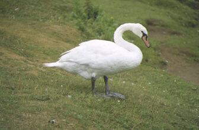
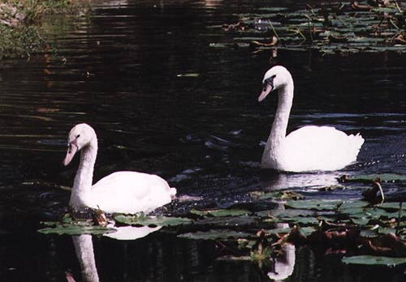

The mute swan is the largest bird in Ireland and can be found all over the country. Unlike the wild swan it stays here throughout the year and does not migrate. It is therefore the only swan you will see in Ireland during the summertime. You can see it on all types of still water such as ponds, lakes, canals and slow-flowing rivers. In winter it is even found in large flocks in sheltered inlets of the sea.
The mute swan can be easily identified by its
pure white plumage and graceful curved neck. It has black legs and feet
and its bill is black and orange with a raised knob at the base. It is
called the “mute” because it has no real call, but it can make hissing
noises when it is angry. When mute swans fly, however, some of their wing
feathers, called pinions make a loud musical singing noise which can be
heard over a mile away.
Long ago there were no mute swans in Ireland,
but we know that from the 13th to the 18th centuries the swans in England
were all owned by the King. They were tamed, and to keep them from flying
away their wings were clipped. The killing of swans for food was strictly
controlled and they were eaten mostly by royalty and noblemen. It appears
that they were brought to Ireland at this time. When the practice of eating
swans died out in the 19th century swans gradually became wild again. Animals
and birds which run wild after being domesticated we call feral.
(mature
mute swan)
Mute swans are well adapted to life in water.
With their long necks they can reach to the bottom of the lake or river
bed to feed. They eat mainly water weeds and sometimes water beetles and
tadpoles. They use their strong legs and large webbed feet to paddle along
in the water. On land swans are clumsy and can only move around slowly.
For this reason they never move very far from the water. Mute swans build
a large nest of living and dead plant material by the water’s edge. It
is often built amongst reeds or on a small island. During the nesting season
the parents defend the nest jealously. You should never go near a nesting
swan since it is so dangerous. It will attack using its powerful wings
to strike blows. There are usually four to seven eggs, about 11cm long,
laid in April-June but there can be as many as twelve eggs. They take thirty-five
days to hatch. The eggs are incubated (kept warm) by the mother bird, the
pen, while the father, the cob, guards the nesting area. When the chicks
hatch, they remain in the nest for only one day before taking to the water.
You will sometimes see young chicks riding on the parent’s back. Young
swans are called cygnets. Parties consisting of four or five cygnets along
with their parents can be seen in autumn and winter. The cygnets are a
mottled brown and do not get their adult plumage until they are nearly
three years old.

Pairs of breading Mute swans will stay with each
other for life
often using the same nesting site for up to twenty
years.